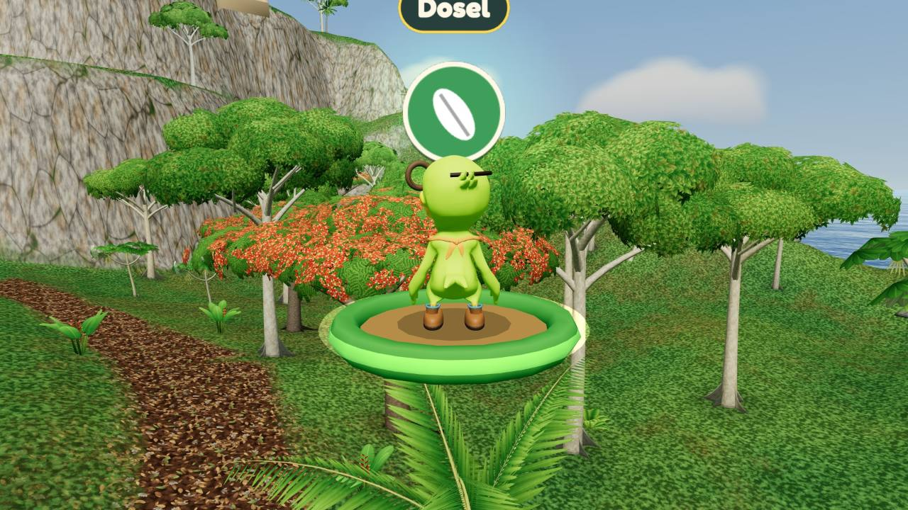

InicioHome · Escuelas y maestrosSchools and teachers
Para escuelas, maestros y familiasFor schools, teachers and families
Lleva Amazona Verse a tu salónBring Amazona Verse to your classroom
Un juego 3D gratis en el navegador, hecho en Puerto Rico, con objetivos de ciencias, Modo Maestro y piloto gratis para escuelas. Todo lo que hay en esta página también está dentro del juego.
A free 3D browser game made in Puerto Rico, with science goals, a Teacher Mode and a free pilot for schools. Everything on this page is also inside the game.
Cada misión pide una habilidad y deja evidenciaEvery mission asks for a skill and leaves evidence
El estudiante predice, observa y explica. El juego registra lo que hizo y lo que aprendió, no un puntaje.
Students predict, observe and explain. The game records what they did and what they learned, not a score.

La percha del dosel en la misión «La ruta de la gota».The canopy perch in the “Path of the Drop” mission.
PruébaloTry it
¿Dónde construirías el refugio de Iguaca?Where would you build Iguaca's shelter?
Son los dos terrenos del capítulo 1, con los mismos datos que ve el estudiante en el juego.These are the two Chapter 1 sites, with the same data students see in the game.
Junto al ríoBy the river
ÁreaArea
64 m²
ElevaciónElevation
baja, a la orilla del ríolow, on the riverbank
AccesoAccess
corto, cerca de Villa Raízshort, close to Villa Raíz
Señal de riesgoRisk sign
marcas de agua a 1 m en los árboleswater marks 1 m up the trees
HábitatHabitat
nidos de ribera cercariverside nests nearby
La colinaThe hill
ÁreaArea
64 m²
ElevaciónElevation
alta, sobre la colinahigh, on top of the hill
AccesoAccess
largo, cuesta arribalong, uphill
Señal de riesgoRisk sign
ninguna visiblenone visible
HábitatHabitat
bosque seco, sin nidosdry forest, no nests
Iguaca · después de la crecidaIguaca · after the flood
«El río subió y el refugio se inundó… Tranquila. Todavía podemos moverlo.»
“The river rose and the shelter flooded… Don't worry. We can still move it.”
En el juego, el error tiene salida: Vittata desarma el refugio, recupera los materiales y lo lleva a la colina. La evidencia estaba en las marcas de agua a 1 m.
In the game, mistakes have a way out: Vittata takes the shelter apart, keeps the materials and moves it to the hill. The evidence was in the water marks 1 m up the trees.
Iguaca · después de la crecidaIguaca · after the flood
«La colina aguantó la crecida. Mi familia está a salvo. ¡Gracias, Vittata!»
“The hill held up against the flood. My family is safe. Thank you, Vittata!”
Elegiste con evidencia: terreno alto y sin marcas de agua. Es el objetivo O6: describir el efecto de un huracán y escoger dónde construir.
You chose with evidence: high ground and no water marks. That is goal O6: describe the effect of a hurricane and choose where to build.
Seis objetivos alineados a los estándaresSix goals aligned to standards
Para todas las edadesFor all ages
El estudiante…The student…DEPR 2022NGSS
O1
Capas del bosqueForest layers
nombra las cuatro capas del bosque y ubica en cada una un organismo que observó.
names the four forest layers and places an observed organism in each one.
DEPR 2022
3.CB2.33.CB2.64.CT2.56.CB2.5
NGSS
3-LS4-3
O2
Cadena alimentariaFood chain
ordena una cadena alimentaria desde el Sol y explica de dónde viene la energía.
orders a food chain starting from the Sun and explains where the energy comes from.
DEPR 2022
5.CB2.35.CB2.46.CB2.7–10
NGSS
5-LS2-15-PS3-1MS-LS2-3
O3
Ciclo del aguaWater cycle
ordena cinco procesos del ciclo del agua y los usa para explicar la crecida.
orders five water-cycle processes and uses them to explain the flood.
DEPR 2022
3.CT1.25.CT2.25.CT2.95.CT2.10
NGSS
5-ESS2-1MS-ESS2-4
O4
AdaptacionesAdaptations
explica cómo dos rasgos o conductas ayudan a un ser vivo a sobrevivir.
explains how two traits or behaviors help a living thing survive.
DEPR 2022
3.CB2.54.CB2.1–36.CB2.13
NGSS
4-LS1-1
O5
ConservaciónConservation
usa datos de población para explicar por qué la cotorra sigue en peligro y nombra dos acciones para protegerla.
uses population data to explain why the parrot is still endangered and names two actions to protect it.
DEPR 2022
3.CA1.45.CB4.46.CB2.166.CB2.19
NGSS
3-LS4-45-ESS3-1MS-LS2-5
O6
HuracanesHurricanes
describe el efecto de un huracán y escoge con evidencia dónde construir.
describes the effect of a hurricane and uses evidence to choose where to build.
Misión «La ruta de la gota»Mission: “The Path of the Drop”
En desarrollo · unos 5 minutosIn development · about 5 minutes
HablarTalk
PredecirPredict
Iguaca pregunta de dónde salió tanta agua. Ninguna respuesta se castiga.
Iguaca asks where all that water came from. No answer is punished.
VolarFly
CapasLayers
Cuatro perchas en flora real: suelo, sotobosque, dosel y emergente.
Four perches on real plants: forest floor, understory, canopy and emergent layer.
HablarTalk
CadenaChain
Ordena Sol, palma y cotorra. En 5.º y 6.º se añaden los descomponedores.
Order Sun, palm and parrot. Grades 5 and 6 add decomposers.
VolarFly
Ojos de cotorraParrot's eye view
Compara los dos terrenos desde el aire.
Compare the two sites from the air.
VolarFly
Nace la gotaA drop is born
Sigue el vapor desde la poza hasta la nube de la cumbre.
Follow the vapor from the pool up to the cloud on the peak.
VolarFly
Sigue la gotaFollow the drop
La lluvia se infiltra en la colina o corre por la quebrada hasta el río, que crece.
Rain soaks into the hill or runs down the stream to the river, which rises.
NadarSwim
La pozaThe pool
Bucea hasta la marca de crecida en la roca. El ciclo se cierra.
Dive down to the flood mark on the rock. The cycle closes.
HablarTalk
Explícale a IguacaExplain it to Iguaca
Cuenta el ciclo en orden y compara lo que predijo con lo que vio.
Tell the cycle in order and compare the prediction with what was seen.
Diario de CampoField Journal
Cada ficha trae un dato de una línea y su fuente. Solo se publica lo verificado.
Each card has a one-line fact and its source. Only verified facts are published.
Iguaca te preguntaIguaca asks you
De 5 a 7 preguntas al final, con pista en el segundo intento y sin puntaje visible.
Five to seven questions at the end, with a hint on the second try and no visible score.
Modo MaestroTeacher Mode
Una clase de 45 minutos, lista para usarA ready-to-teach 45-minute lesson
La guía trae qué hacer antes, durante y después de jugar, en parejas de piloto y científico que cambian de rol a mitad de la misión.
The guide covers what to do before, during and after playing, with pilot and scientist pairs who swap roles halfway through the mission.
AntesBefore10 min
DuranteDuring25 min
DespuésAfter10 min
045 min
AntesBefore
Pregunta guía, predicción en el Diario impreso y vocabulario con imágenes.
Guiding question, a prediction in the printed Journal and picture vocabulary.
DuranteDuring
20 minutos de misión mientras circulas con tres preguntas de sondeo, y 5 minutos de preguntas dentro del juego.
20 minutes of mission while you circulate with three probing questions, then 5 minutes of in-game questions.
DespuésAfter
El ciclo en la pizarra y un boleto de salida: Construiría en ___ porque ___.
The cycle on the board and an exit ticket: I would build at ___ because ___.
Reporte sin datos personalesReports without personal data
El progreso se guarda solo en el dispositivo. Pones una etiqueta, como «Estación 4», y bajas un CSV o JSON con pasos, intentos por pregunta y objetivos logrados. Un botón lo borra todo.
Progress is saved only on the device. You add a label like “Station 4” and export a CSV or JSON file with steps, attempts per question and goals reached. One button erases everything.
Actividades sin pantallaScreen-free activities
Mural del bosque en cuatro pisosA four-story forest mural
El ciclo del agua en una bolsaThe water cycle in a bag
Red de estambre con un «huracán»A yarn food web hit by a “hurricane”
Nido a prueba de tormenta, con abanico y regaderaA storm-proof nest, tested with a fan and a watering can
Gráfica de cotorras con datos de USFWSA parrot population graph with USFWS data
Rúbrica de cuatro nivelesFour-level rubric
Observación y registroObservation and record-keeping
Modelo del ciclo del aguaWater-cycle model
Cadena alimentariaFood chain
Argumento con evidencia y conservaciónEvidence-based argument and conservation
Para toda la claseFor the whole class
Lectura en voz altaRead-aloud
Modo de texto corto con iconosShort-text mode with icons
Español, inglés o bilingüeSpanish, English or bilingual
Modo escuela sin tienda y pausa rápidaSchool mode with no store, and quick pause
El Modo Maestro forma parte del prototipo. Validamos la guía y la rúbrica con maestros durante el piloto.
Teacher Mode is part of the prototype. We validate the guide and rubric with teachers during the pilot.
Para escuelasFor schools
Lleva Amazona Verse a tu salónBring Amazona Verse to your classroom
Empieza con un piloto gratis. Si funciona en tu salón, sigue con una licencia anual.
Start with a free pilot. If it works in your classroom, continue with an annual license.
Empieza aquíStart here
Piloto gratisFree pilot
$0 para tu escuela$0 for your school
IncluyeIncludes
El capítulo 1 jugable, en el navegadorPlayable Chapter 1, in the browser
Guía de 45 minutos y actividades sin pantallaA 45-minute guide and screen-free activities
Modo escuela sin tiendaSchool mode with no store
Reporte de progreso sin datos personalesProgress reports without personal data
Acompañamiento del equipoSupport from our team
Te pedimosWe ask you to
Usarlo con tu grupo o tu claseUse it with your group or class
Contarnos qué funcionó y qué noTell us what worked and what didn't
Capítulo 1 gratisChapter 1 is freePara todos.For everyone.
EscuelasSchoolsPiloto gratis y luego licencia anual.Free pilot, then an annual license.
FamiliasFamiliesExtras opcionales más adelante.Optional extras later on.
Sin anunciosNo adsNi cajas sorpresa.And no loot boxes.
Lo culturalCultural itemsPava, guayabera y maracas se ganan jugando.Pava, guayabera and maracas are earned by playing.
Crecemos de maestro a maestro.We grow teacher to teacher.Si te funciona en el salón, cuéntaselo a un colega.If it works in your classroom, tell a colleague.
ÚneteJoin us
Familias, aliados e inversionistasFamilies, partners and investors
Buscamos escuelas piloto, aliados de conservación y capital.
We are looking for pilot schools, conservation partners and capital.
FamiliasFamilies
Seguro por diseño: sin anuncios, sin chat abierto y sin cajas sorpresa. Tu hijo usa un nombre inventado y el progreso se queda en tu dispositivo.
Safe by design: no ads, no open chat and no loot boxes. Your child uses a made-up name and progress stays on your device.
Amazona Verse en pocas líneasAmazona Verse in a few lines
Video pitch · 2:45 · con subtítulos en español e inglés. Todas las imágenes son del juego.Pitch video · 2:45 · with Spanish and English subtitles. All footage is from the game.
Qué esWhat
Juego educativo 3D que se juega en el navegadorAn educational 3D game played in the browser
Para quiénFor
Jugadores de todas las edades, sus maestros y sus familiasPlayers of all ages, their teachers and families
ProtagonistaHero
Vittata, una cotorra puertorriqueña inventoraVittata, a Puerto Rican parrot and inventor
EstadoStatus
Prototipo jugable del capítulo 1 (octubre de 2026)Playable prototype of Chapter 1 (October 2026)
IdiomasLanguages
Español e inglésSpanish and English
OrigenOrigin
Equipo Amazona Verse · Puerto RicoAmazona Verse team · Puerto Rico
Texto para mediosBoilerplate
Amazona Verse es un juego educativo 3D que se juega en el navegador, creado en Puerto Rico. Jugadores de todas las edades acompañan a Vittata, una cotorra puertorriqueña inventora, a proteger su comunidad después de una tormenta, mientras aprenden ciencias alineadas a los estándares del Departamento de Educación de Puerto Rico (2022) y NGSS. Sin anuncios, sin chat y sin datos personales del estudiante. Equipo Amazona Verse · Puerto Rico.
Amazona Verse is an educational 3D game played in the browser, made in Puerto Rico. Players of all ages join Vittata, a Puerto Rican parrot and inventor, to protect her community after a storm while they learn science aligned to the Puerto Rico Department of Education (2022) standards and NGSS. No ads, no chat and no student personal data. Amazona Verse team · Puerto Rico.
Logo, capturas y video en alta resolución: pídelos en la sección de contacto.
High-resolution logo, screenshots and video: request them through the contact section.
ContactoContact
EscríbenosGet in touch
Pilotos, prensa, alianzas o inversión. Te contestamos en español o en inglés.
Pilots, press, partnerships or investment. We reply in Spanish or English.
Nuestro correoOur email
Correo por confirmarEmail to be confirmed
Copia el correo y escríbenos desde tu cuenta. Escribe solo datos de adultos; no envíes nombres de estudiantes.
Copy the address and write to us from your own account. Share adult contact details only; please do not send student names.
Mensaje modelo para pedir un pilotoSample message to request a pilot
Hola, equipo de Amazona Verse:
Soy maestra/o de ___ grado en la escuela ___, en ___.
Me interesa un piloto gratis con ___ estudiantes.
En el salón usamos: Chromebooks / computadoras / tabletas.
Gracias.
Hello, Amazona Verse team:
I teach grade ___ at ___ school, in ___.
I'm interested in a free pilot with ___ students.
In class we use: Chromebooks / computers / tablets.
Thank you.